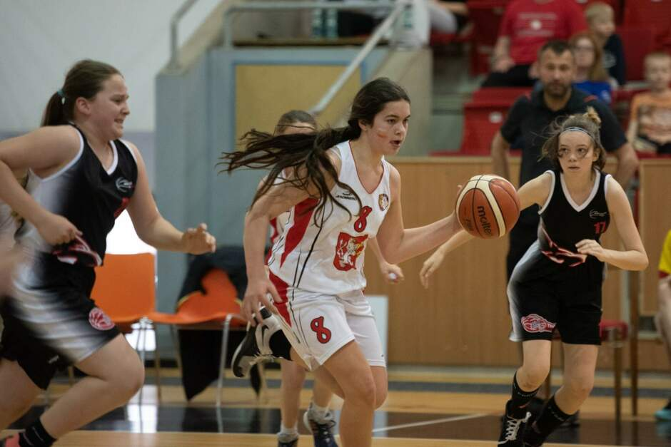

Author
Čtvrtou letní posilou basketbalistů Nymburka se stal Američan Eric
Lockett. Šestadvacetileté křídlo přichází z Arisu Soluň, kde patřil mezi
nejlepší obránce řecké ligy. S českým šampionem podepsal smlouvu na rok.
„Eric hraje velmi dobře a rychle do koše, ale nás zaujal především tím, jak pracuje pro tým i bez míče a zejména svou obranou, kterou nám dává do defenzivy mnoho dalších možností. Svou hrou mi připomíná Howarda Sant-Roose a nechám na fanoušcích, aby si to posoudili sami,“ řekl sportovní ředitel Nymburka Ladislav Sokolovský.
Rodák z Atlanty prošel univerzitami Chipola, Florida International a North Carolina State, kde hrál s Torinem Dornem, který v minulé sezoně nastupoval za Jindřichův Hradec v KNBL.
A proti nymburské legendě Petru Bendovi jste nehrál?
Rodák z Atlanty prošel univerzitami Chipola, Florida International a North Carolina State, kde hrál s Torinem Dornem, který v minulé sezoně nastupoval za Jindřichův Hradec v KNBL.
Profesionální kariéru začal v Kataru za Al-Rayyan, kde s průměry 16,7 bodů, 8,1 doskoků a 5,3 asistence patřil mezi nejlepší hráče. Poté zamířil do britské ligy, kde oblékal dres Bristolu a sbíral v průměru 15 bodů, 7 doskoků a 4,2 asistence.
Minulou sezonu pak strávil v Arisu Soluň, kde byl především obranným specialistou. Za své výkony v defenzivě ho fanoušci zvolili dokonce druhým nejlepším obráncem celé řecké ligy po Thomasovi Walkupovi z Olympiakosu. V průměru hrál 22 minut na utkání a sbíral 6,1 bodů, 4 doskoky a 1,3 asistence.
Minulou sezonu pak strávil v Arisu Soluň, kde byl především obranným specialistou. Za své výkony v defenzivě ho fanoušci zvolili dokonce druhým nejlepším obráncem celé řecké ligy po Thomasovi Walkupovi z Olympiakosu. V průměru hrál 22 minut na utkání a sbíral 6,1 bodů, 4 doskoky a 1,3 asistence.
Minulou sezonu pak strávil v Arisu Soluň, kde byl především obranným specialistou. Za své výkony v defenzivě ho fanoušci zvolili dokonce druhým nejlepším obráncem celé řecké ligy po Thomasovi Walkupovi z Olympiakosu. V průměru hrál 22 minut na utkání a sbíral 6,1 bodů, 4 doskoky a 1,3 asistence.
Minulou sezonu pak strávil v Arisu Soluň
Minulou sezonu pak strávil v Arisu Soluň, kde byl především obranným specialistou. Za své výkony v defenzivě ho fanoušci zvolili dokonce druhým nejlepším obráncem celé řecké ligy po Thomasovi Walkupovi z Olympiakosu. V průměru hrál 22 minut na utkání a sbíral 6,1 bodů, 4 doskoky a 1,3 asistence.
Minulou sezonu pak strávil v Arisu Soluň, kde byl především obranným specialistou. Za své výkony v defenzivě ho fanoušci zvolili dokonce druhým nejlepším obráncem celé řecké ligy po Thomasovi Walkupovi z Olympiakosu. V průměru hrál 22 minut na utkání a sbíral 6,1 bodů, 4 doskoky a 1,3 asistence.
Minulou sezonu pak strávil v Arisu Soluň, kde byl především obranným specialistou. Za své výkony v defenzivě ho fanoušci zvolili dokonce druhým nejlepším obráncem celé řecké ligy po Thomasovi Walkupovi z Olympiakosu. V průměru hrál 22 minut na utkání a sbíral 6,1 bodů, 4 doskoky a 1,3 asistence.
Minulou sezonu pak strávil v Arisu Soluň, kde byl především obranným specialistou. Za své výkony v defenzivě ho fanoušci zvolili dokonce druhým nejlepším obráncem celé řecké ligy po Thomasovi Walkupovi z Olympiakosu. V průměru hrál 22 minut na utkání a sbíral 6,1 bodů, 4 doskoky a 1,3 asistence.